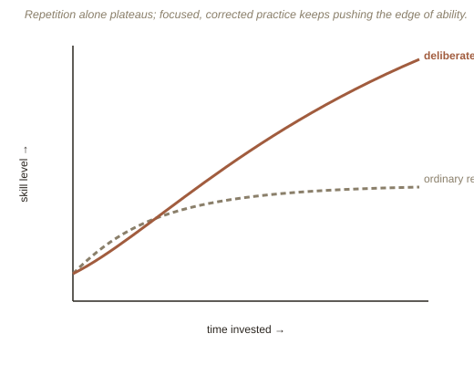

Chapter 1: Practice That Doesn't Feel Like Practice
The "10,000 hour rule" — the idea that roughly 10,000 hours of practice separates experts from amateurs in any field — has become one of the most repeated (and most misquoted) findings in pop psychology. The number actually comes from psychologist Anders Ericsson's research on elite violinists, and Ericsson spent much of his later career, including his book Peak, trying to correct how badly that number had been oversimplified. His real claim was never just about hours. It was about a very specific, demanding kind of practice — and most of the hours people put into "practicing" a skill don't actually qualify.
Deliberate practice is not the same as repetition
Ericsson's term deliberate practice describes a narrow, effortful category: practice with a specific, well-defined goal just past your current ability, immediate feedback on whether you're succeeding, and constant, uncomfortable focus on the specific weaknesses that feedback exposes — not on the parts you already do well. A weekend tennis player who's hit tens of thousands of forehands over the years, but always against similar opponents at a similar pace with no coach correcting technique, has accumulated hours without accumulating much deliberate practice — which is why that player often plateaus for decades instead of steadily improving. The distinguishing feature isn't effort or sweat; it's whether the practice is specifically structured to break a current limitation, over and over, with correction.
Mental representations, not just muscle memory
Ericsson's other central claim is that what separates experts isn't primarily faster reflexes or raw talent — it's the quality of their mental representations: rich, detailed internal models that let an expert instantly recognize patterns and possibilities that a novice's mind can't even perceive as options. A chess grandmaster shown a real mid-game board for five seconds can reconstruct it near-perfectly from memory afterward — but shown a board with pieces placed randomly (not from an actual game), that same advantage almost disappears. The grandmaster isn't memorizing positions; their years of deliberate practice have built a mental library of meaningful patterns, and a random board simply doesn't contain any.

Epstein's counterargument: sometimes specializing early is the wrong move
David Epstein's Range was written partly as a direct challenge to how the "10,000 hour" idea gets applied — specifically, the assumption that earlier, narrower specialization is always better. Epstein's research surveys fields (sports, music, science, business) where late starters and generalists — people who sampled widely before committing, or who kept working across multiple domains — routinely outperformed early specialists in the long run, especially in fields where the problems themselves are unpredictable or poorly defined. His summary distinction: deliberate practice works best in "kind" learning environments (kind = here meaning forgiving and predictable, with clear rules and fast, accurate feedback — like chess or golf), but many real domains, especially creative and strategic ones, are "wicked" environments (wicked = the opposite here — irregular, with unclear or delayed feedback, where the rules of what "worked" keep shifting), where breadth of experience often beats narrow, early-focused repetition.
Try this
Ideas for noticing or testing this in your own life.
- Notice a skill you've plateaued on: pick something you've "practiced" for years without much improvement, and check honestly whether it's ever had real feedback or correction, or just repetition.
- Try designing one week of deliberate practice for a skill you actually care about — target your single worst weakness specifically, with a way to get quick feedback on whether you're improving.
Worth pulling on?
A few loose threads from this chapter — if any of these genuinely grab you, that's a good sign of where to go next.
- Ericsson's original violin study never actually claimed "10,000 hours" as a magic threshold — that framing came from Malcolm Gladwell's popularization of the research in Outliers, and the original study's elite group averaged closer to that number by a specific age, with huge individual variation Gladwell's summary left out entirely.
- Feedback speed matters enormously — chess and music offer fast, clear feedback (right or wrong note, won or lost the game), which is part of why deliberate practice research concentrates so heavily on those fields; slower-feedback domains are much harder to study the same way. → Ties into Motivation and Self-Determination — deliberate practice is famously unpleasant in the moment, which raises the question of what actually sustains someone through years of it.
- Tiger Woods and Roger Federer are the two examples most often used to argue opposite sides of this debate — Woods specialized in golf almost from infancy; Federer played several sports casually as a child before focusing on tennis relatively late. Both became generational talents, which is exactly why the debate isn't settled by anecdote alone.